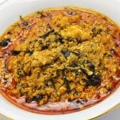

Egusi

This recipe will show you how to make Nigerian Egusi Soup, a popular West
African soup made with melon seeds
Ingredients
- 1 cup blended onions (about 3-5 and fresh chilies, to taste)
- 4 cups egusi (melon seeds, ground or milled)
- 1/2 - 1 cup palm oil
- 2 teaspoons fresh the Une (Iru,locust beans)
- Salt (to taste)
- Ground crayfish (to taste)
- 7-8 cups stock
- Cooked meat & fish (quantity and variety to perosnal preference)
- 2 cups cut pumpkin leaves
- 1 cup waterleaf(cut)
- 3 tablespoons bitter leaf (washed)
- Egusi (Egusi seeds and onions blended
Directions:
- In a large pot, heat the palm oil on medium for a minute and then add the Une
- slowly add the stock and set on low heat to simmer.
- Scoop teasopoon size balls of the egusi paste mixture into the stock.
- Leave to simmer for 20 - 30 minutes so the balls cook through.
- Add the meat and fish and other bits which you'd like to use.
- Add cut-up pumpkin leaves
- Add the waterleaf
- Sitr and put a lid on the pot and allow cook for 7-10 minutes, till the leaves wilt.
- Add the bitter leaf. Leave the lid off while the cooking finishess for another 5-10 minutes
- Stir, check seasoning and adjust accordingly.